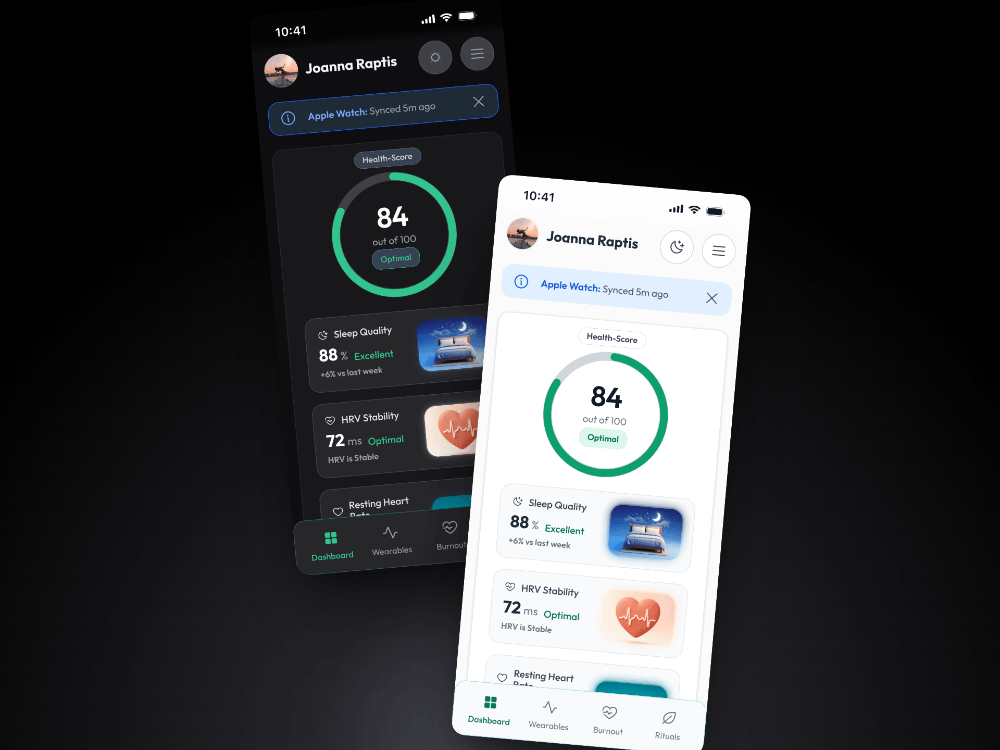
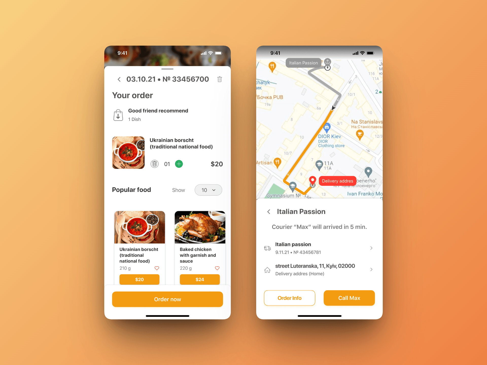
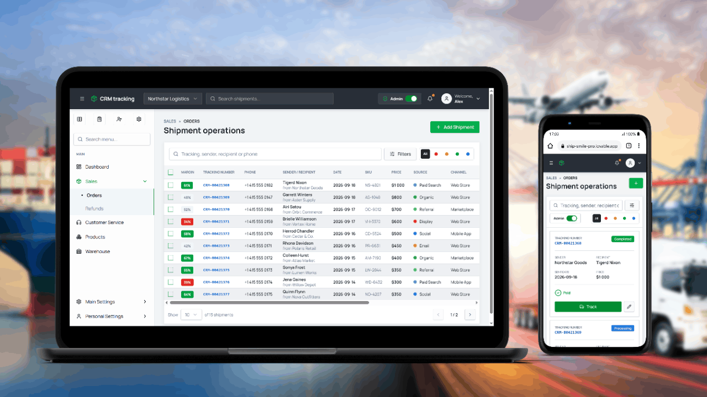
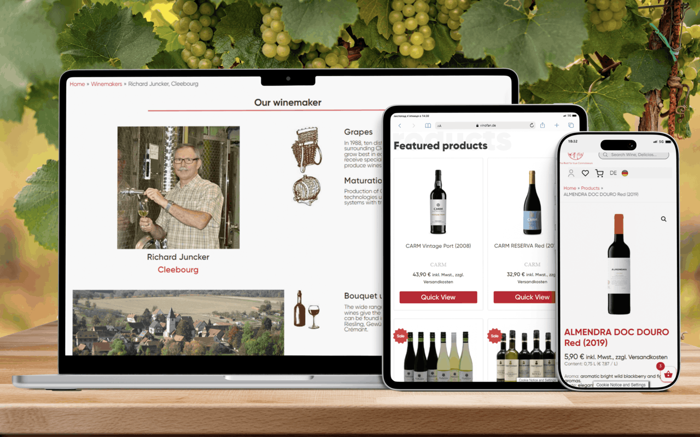
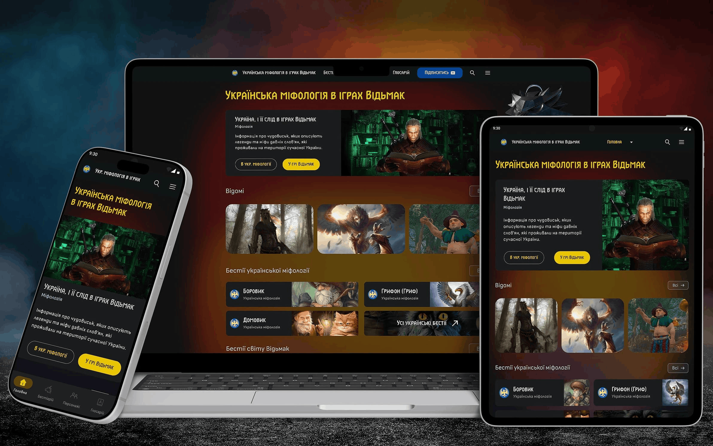

AI-driven mobile UX platform (opens in a new tab)
Created intuitive AI features, standardized internal asset libraries, and developed adaptive component sets for a fast-moving product sprint.
-24% Time on Task
7+ years of UI/UX experience
I design aesthetic, accessible, and intuitive websites and mobile applications. 7+ years of UI/UX and engineering experience.
From FinTech banking to AI product sprints — interfaces built around real user behaviour, design systems and dev-ready hand-off.

Selected work
Six ecosystems, transforming rough ideas into clear, high-performance digital interfaces.
Created intuitive AI features, standardized internal asset libraries, and developed adaptive component sets for a fast-moving product sprint.

An intuitive health-tracking app featuring seamless user flows, clear visual hierarchy, and an interactive prototype.

Redesigned cart navigation, payment checkout, and multi-scenario onboarding to build trust at the moment users were most likely to drop off.

Data-dense system with admin and user role-based flows, interactive tables, and analytical dashboards built for daily operator use.

End-to-end web design featuring interactive taste profiling, catalog discovery, and conversion-focused checkout – built and iterated independently over time.

A conceptual project for the research and visual adaptation of Ukrainian folklore and demonology within the universe of The Witcher fantasy games.
HIGHLIGHTS
Lviv, Ukraine · Remote worldwide
Achievements
Verified outcomes from shipped product work.
Time on task, AI mobile UX (Glorium Tech)
See project →
Checkout churn, iOS food-tech platform
See project →
Processing speed, logistics CRM redesign
See project →yrs
Product UX, 10+ yrs across the design industry
About me →Approach
A degree in systems engineering from Dnipro University of Technology means I don't just draw interfaces, I think in constraints, states, and hand-offs. That background shapes three things in every project I take on:
Select a step to see how research turns into shipped, accessible UI.
User research and journey mapping to understand who the product is for and where they struggle.
Information architecture, user flows and wireframes that make the logic of the product clear before any visual polish.
Scalable design systems, component libraries and tokens that match what engineers actually build.
Flows, wireframes and interactive prototypes built for fast validation.
Specifications and design tokens that correspond directly to what engineers build, which reduces development time.
WCAG 2.2 checked at every step — color, contrast and flows, not a late-stage audit.
Engineering principles behind every project
Specifications and design tokens that correspond directly to what engineers actually build, which reduces development time.
Design decisions weighed against real platform and performance constraints from the start.
Accessibility is a starting constraint, not a late-stage audit — color, contrast, and flows are checked as I go.
Landings and full sites – from strong logical structure to arranged, dev-ready UI.
Refining existing interfaces around user metrics and real business goals.
Quick usability audits that spot conversion blockers before they cost you users.
Flows, wireframes, and interactive prototypes built for fast validation.
Skills & expertise
Specialist in Systems Engineering – Dnipro University of Technology. Computer engineering, systems architecture, and visualization.
Specialized UI/UX design courses
About me
A path from FinTech banking to AI product sprints, with a long independent practice running throughout.
Read the full story →Jun 2025 – Aug 2025
AI product sprint. Created intuitive AI features, standardized asset libraries, developed adaptive component sets.
Apr 2021 – Apr 2022
iOS food delivery app. Redesigned cart, checkout, and onboarding; reduced churn and lifted registrations.
May 2014 – Present
Long-term projects including the wine e-commerce platform and the logistics & package tracking CRM.
Jan 2013 – Apr 2014
FinTech internet & mobile banking, B2B/B2C, with a focus on SME tax and invoicing workflows.
Services
Focused 45-minute session: solve a tough UX problem, polish your portfolio, prep for interviews, or get expert design feedback.
Practical interface review: identifying usability friction, conversion bottlenecks, and clear actionable steps to fix them.
End-to-end custom website: solid UX structure, clean visual direction, and responsive UI specs ready for developers.
Contact
I will help design and scale your Fintech, AI, or SaaS ecosystem.